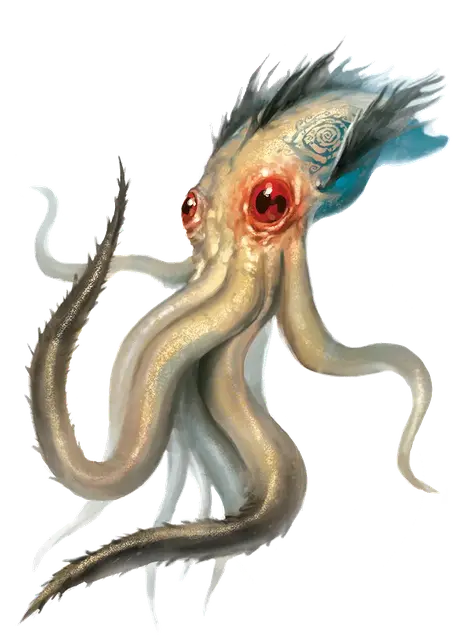

Молодой кракен
Juvenile Kraken
Огромный Монстр (Титан), хаотично-злой

Класс Доспеха 16 (природный доспех)
Хиты 207 (18к12 + 90)
Скорость 20 футов, плавая 50 футов
| мод | спас | ||
|---|---|---|---|
| СИЛ | 24 | +7 | +12 |
| ЛОВ | 11 | +0 | +5 |
| ТЕЛ | 20 | +5 | +10 |
| мод | спас | ||
|---|---|---|---|
| ИНТ | 19 | +4 | +9 |
| МДР | 15 | +2 | +7 |
| ХАР | 17 | +3 | +3 |
Сопротивление урону дробящий, колющий, рубящий от немагических атак
Иммунитет к урону электричество
Иммунитет к состояниям паралич, испуг
Чувства истинное зрение 120 футов, пассивное Восприятие 12
Языки понимает язык Бездны, Инфернальный, Небесный и Первичный, но не говорит, Телепатия 60 фт.
Опасность 14 (11500 опыта)
Бонус мастерства +5
Среда обитания Под водой
Особенности
Амфибия. Кракен может дышать и воздухом и под водой.
Свобода перемещений. Кракен игнорирует труднопроходимую местность, и магические эффекты не могут ни уменьшить его скорость, ни сделать опутанным. Он может потратить 5 футов перемещения, чтобы избавиться от немагического опутывания или перестать быть схваченным.
Действия
Мультиатака. Кракен совершает две атаки Щупальцем, каждую из которых можно заменить Броском.
Укус. Рукопашная атака оружием: +12 к попаданию, досягаемость 5 футов, одна цель. Попадание: 20 (3к8 + 7) колющего урона. Если цель — существо с размером не больше Среднего, схваченное кракеном, это существо проглатывается, и захват оканчивается. Будучи проглоченным, существо является слепым и опутанным, обладает полным укрытием от атак и прочих эффектов, исходящих снаружи, и получает урон кислотой 21(6к6) в начале каждого хода кракена.
Если кракен получает в течение одного хода от находящегося внутри него существа урон 35 или больше, он должен в конце этого хода преуспеть в спасброске Телосложения Сл 23, иначе изрыгнет всех проглоченных существ, которые падают ничком в пространстве в пределах 10 футов от кракена. Если кракен умирает, проглоченное существо перестает быть опутанным им, и может высвободиться из трупа, используя 15 футов перемещения, и на выходе падает ничком.
Щупальце. Рукопашная атака оружием: +12 к попаданию, досягаемость 20 футов, одна цель. Попадание: 17 (3к6 + 7) дробящего урона, и цель становится схваченной (Сл высвобождения 20). Пока цель схвачена, она опутана. У кракена десять щупалец, и каждое может держать в захвате одну цель.
Бросок. Один несомый предмет с размером не больше Среднего, или существо, схваченное кракеном, бросается на расстояние до 40 футов в случайном направлении, после чего падает ничком. Если брошенная цель попадает в твердую поверхность, цель получает дробящий урон 3 (1к6) за каждые 10 футов броска. Если цель была брошена в другое существо, это существо должно преуспеть в спасброске Ловкости Сл 13, иначе получит такой же урон и будет сбито с ног.
Удар молнии. Кракен магическим образом создает разряд молнии, который может ударить цель, видимую в пределах 90 футов от кракена. Цель должна совершить спасбросок Ловкости Сл 18, получая 22 (4к10) урона электричеством при провале, или половину этого урона при успехе.
Легендарные действия
Кракен может совершить 3 легендарных действия, выбирая из представленных ниже вариантов. За один раз можно использовать только одно легендарное действие, и только в конце хода другого существа. Кракен восстанавливает использованные легендарные действия в начале своего хода.
Атака щупальцем (стоит 2 действия). Кракен совершает одну атаку Щупальцем.
Бросок. Кракен использует Бросок.
Облако чернил (стоит 3 действия). Находясь под водой, кракен выпускает облако чернил с радиусом 40 футов. Облако огибает углы, и его местность является сильно заслонённой для всех кроме самого кракена. Все существа кроме кракена, оканчивающие там ход, должны преуспеть в спасброске Телосложения Сл 18, получая 11 (2к10) урона ядом при провале, или половину этого урона при успехе. Сильное течение рассеивает облако, которое в противном случае все равно исчезает в конце следующего хода кракена.
Описание
Скрытое в глубокой, темной подводной яме недалеко от Стайза, это существо несёт на себе печать безумия темного бога Тариздуна. Становясь с каждым днем все более независимым, он мечтает освободиться от своих угнетателей и навязать морям свою собственную злую волю.